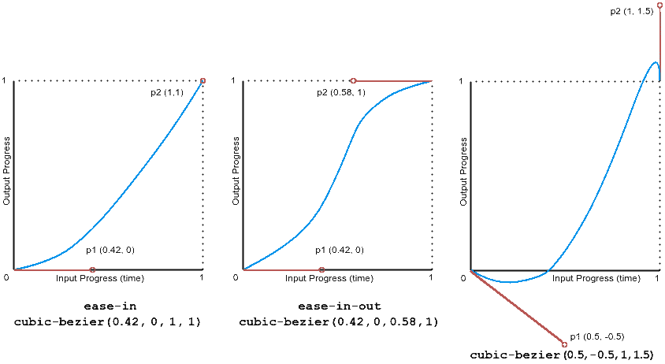
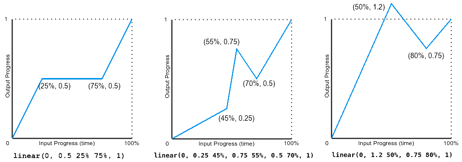

CSS cвойство animation-timing-function определяет скорость воспроизведении анимации в течении её цикла. В качестве значений принимает ключевые слова или функцию. Значение по умолчанию ease, не наследуется, не анимируется.
.item {
animation-timing-function: ease | ease-in | ease-out |
ease-in-out | linear | step-start |
step-end | steps | cubic-bezier() | linear();
}| ease | Анимация начинается медленно, затем ускоряется и к концу движения опять замедляется.
аналогично |
| ease-in | Анимация медленно начинается, к концу ускоряется.
аналогично |
| ease-out | Анимация начинается быстро, к концу замедляется.
аналогично |
| ease-in-out | Анимация начинается и заканчивается медленно.
аналогично |
| linear | Одинаковая скорость от начала и до конца.
аналогично |
| step-start | Как таковой анимации нет. Стилевые свойства сразу же принимают конечное значение.
аналогично steps(1, jump-start) |
| step-end | Как таковой анимации нет. Стилевые свойства находятся в начальном значении заданное время, затем сразу же принимают конечное значение.
аналогично steps(1, jump-end) |
| steps() | Функция для заданния числа шагов воспроизведении анимации с одинаковым промежутком времени.
animation-timing-function: steps(число, параметр);
|
| cubic-bezier() | Задаёт функцию движения в виде кривой Безье. Первый и третий параметры функции должны быть в диапазоне от 0 до 1.
 cubic-bezier(0...1, n, 0...1, n); |
| linear() |
Функция линейно интерполирует между указанными точками остановки замедления. Точка остановки — это пара выходного прогресса и входного процента. Входной процент необязателен и выводится, если не указан. Если входной процент не указан, то первая и последняя точки остановки устанавливаются на 0% и 100% соответственно, а точки остановки в середине получают процентные значения, полученные путем линейной интерполяции между ближайшими предыдущей и следующей точками, имеющими процентное значение.  |
.box {
-webkit-animation-timing-function: linear;
-moz-animation-timing-function: linear;
-o-animation-timing-function: linear;
animation-timing-function: linear;
}ease: медленно начинается, быстро в середине, медленно завершается
linear: постоянная скорость
ease-in: медленно начинается, быстро завершается
ease-out: быстро начинается, медленно завершается
ease-in-out: похоже на ease, но с более выраженным ускорением/замедлением